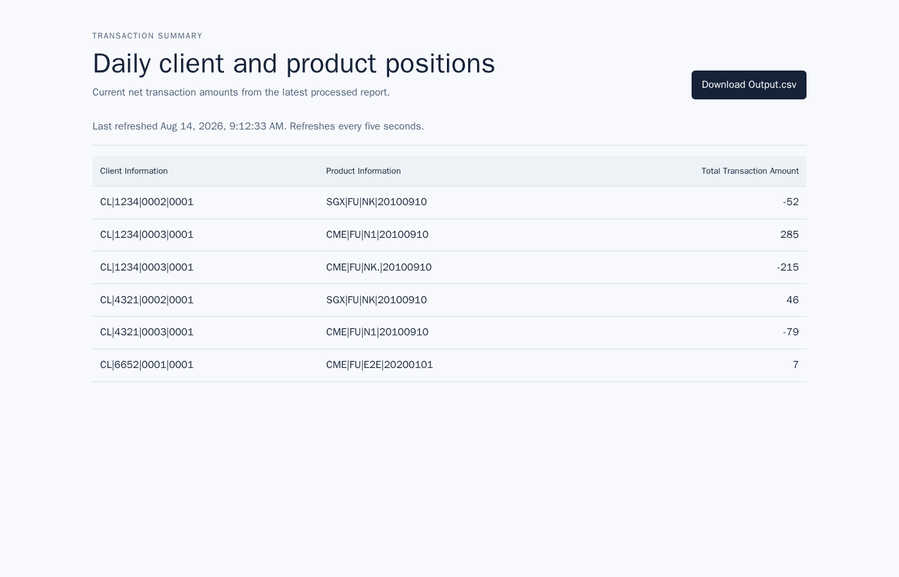

Live demo · 14 Aug 2026 09:12 UTC
The stack ran successfully
Fresh docker compose down -v && docker compose up --build -d, then scripts/e2e-stack.sh compose. Screenshot and tables below are from that boot, not mocks.
UI http://127.0.0.1:8081 API http://127.0.0.1:8080 Kafka kafka:9092 e2e PASS
1. What the browser showed
Angular loaded GET /api/summary and polled every five seconds. Download Output.csv is the same snapshot as the table.

Captured 14 Aug 2026, 09:12:33 UTC from http://127.0.0.1:8081. Six rows: the five oracle totals, plus one record appended through Kafka during this session.
2. Live API snapshot
Each row is one client/product group. Amount is signed net quantity (long − short).
| Client Information | Product Information | Total |
|---|---|---|
| CL|1234|0002|0001 | SGX|FU|NK|20100910 | -52 |
| CL|1234|0003|0001 | CME|FU|N1|20100910 | 285 |
| CL|1234|0003|0001 | CME|FU|NK.|20100910 | -215 |
| CL|4321|0002|0001 | SGX|FU|NK|20100910 | 46 |
| CL|4321|0003|0001 | CME|FU|N1|20100910 | -79 |
| CL|6652|0001|0001 | CME|FU|E2E|20200101 | 7 |
Highlighted row is the e2e append to the container’s /data/Input.txt. JSON, CSV download, nginx proxy, and on-disk Output.csv all had these six rows.
3. How data got there
Input.txt → validate → Kafka topic (bundled broker) → Kafka Streams (exactly_once_v2)
↓
Output.csv ← aggregate by client|product (≤1s flush)
↓
GET /api/summary and GET /api/summary.csv
↓
Angular table (5s poll) + CSV download4. This session’s checks
docker compose down -v && docker compose up --build -d
kafka / backend / frontend: Up (kafka healthy)
GET /actuator/health → {"status":"UP","groups":["liveness","readiness"]}
GET /api/summary → 5 oracle rows, then 6 after append
GET /api/summary.csv → HTTP 200, text/csv, attachment Output.csv
GET http://127.0.0.1:8081/api/summary → 6 rows via nginx
/data/Output.csv → same 6 rows (310 bytes)
amn-amro-transactions → 717 after fixture, 718 after append
amn-amro-transactions-dead-letter → 0 after fixture, 1 after malformed line
scripts/e2e-stack.sh compose
PASS compose client=CL|6652 txn 717->7185. Boot it yourself
./scripts/up.sh -d— Java 21, Maven, Node, Docker. Kafka is in the stack.- UI http://localhost:8081, API http://localhost:8080/api/summary.
- Empty
/datais seeded with the 717-record fixture. You should see the first five rows above. - Prove live ingest:
scripts/e2e-stack.sh compose, or append a 176-character315line toInput.txt.